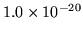
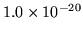

As in the previous section, the fields are mostly self-explanatory. The Iterations: header is for information only and records how many iterations had been performed to produce the classmap contained within the file, and the Derived from: header is similarly also for display purposes only. Any number of headers may be present; the header section is terminated by finding a line beginning with the four characters making up Word. The colon-terminated headers may be in any order.
CLASS<int> must be the name of a
class in the classmap (technically actually the wordmap) used to build
the class-given-class history  -gram component of the language model
- the file built by LBUILD. In the current implementation
these class names are restricted to being of the form CLASS<int>, although a modification to the code in LMODEL.C
would allow this restriction to be removed. Each <float>
specifies the natural logarithm of the probability of the word given
the class, or -99.9900 if the probability of the word is less than
.
-gram component of the language model
- the file built by LBUILD. In the current implementation
these class names are restricted to being of the form CLASS<int>, although a modification to the code in LMODEL.C
would allow this restriction to be removed. Each <float>
specifies the natural logarithm of the probability of the word given
the class, or -99.9900 if the probability of the word is less than
.